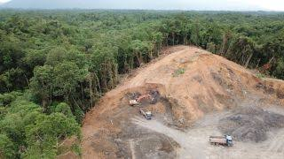

Deforestation means cutting down trees in Jarge number. The causes of deforestation are many. Bangladesh is the most densely populated country in the world.
Its population is much more in proportion to its area. This huge number of population needs more shelter, agricultural land, fuel, lurniture etc. For all these reasons people cut trees. Moreover, there are some dishonest people who cut trees in our forests to make money. The effects of deforestation are too many to describe. This destruction distrubs our ecological balance. The exstence of animals are going to be threatened.  Due to deforestation carbon dioxide is inereasing worldwide. As a result, the world is becoming warmer. The sea level is rising and many parts of the world is going to be engulfed by the sea in recent future. On the other hand, new arcas of thc world are turning into deserts as a result of deforeatation.
The removal of trees causes birds and other animals living on them to leave the place. It also causes serious damage to the sotl, as trees give portection to soil as well. In the end, the soil gets sediment in the river bed and causes frequent floods. So, If we destroy trees at random, one day the country will turn into a great desert. All living animals and birds will not find any food or shelter to live in. They will be destroyed. There wll be no rain and as a result our agriculture will face a great crisis. The temperature will rise and it will cause green house effect. The country will be unsuitable for living and various natural calamities like flood, drought, storm ete. will visit our country. Immediate measures should be taken to prevent deforestation. People should be made aware of tree plantation through mass media. Tree plantation programme should be extended throughout the country.
Credit: Md. Saleh Ahmed Rahat
Content name: Deforestation
Made with: HTML & CSS
All copyticopyright reserved ©
Soure:www.w3school.com